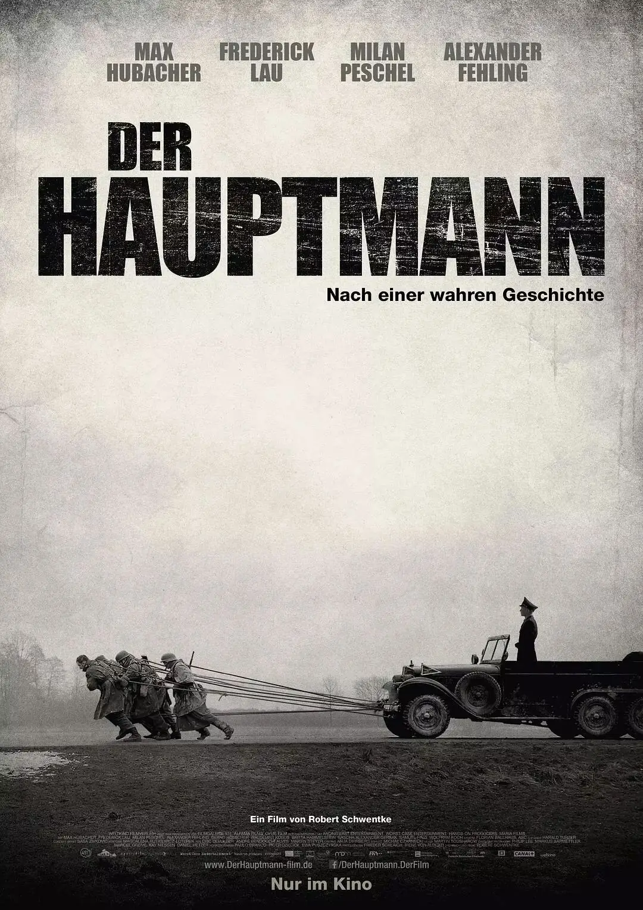
1945年4月，距离二战结束还有两周。
盟军攻入德国，德军大面积溃败，大量士兵四散逃亡，可德国高级军官还坚持着纳粹帝国的道路自信、理论自信与制度自信。
他们对这些逃兵恨之入骨，因为逃兵不仅影响士气，还在监狱里白吃白喝。
因此，纳粹军官视这些逃兵为猪罗，恨不得杀之而后快。
这些逃兵中有一个名叫郝罗德的19岁男孩，他差点被一位上尉虐杀，所幸他最终死里逃生。
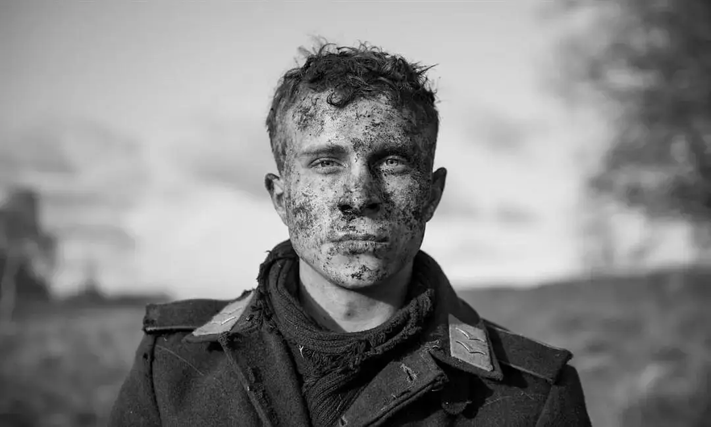
更加幸运的是，郝罗德无意中拣到了一套挂满勋章的上尉军服，他兴奋地穿上军服，模仿着上尉盛气凌人的语气对着空气训话。
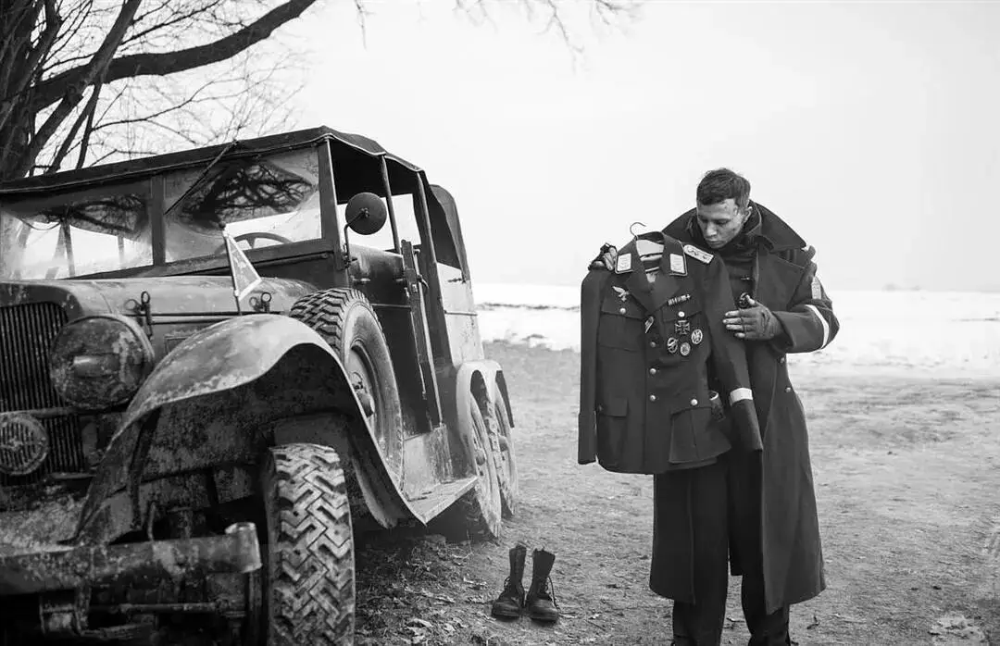
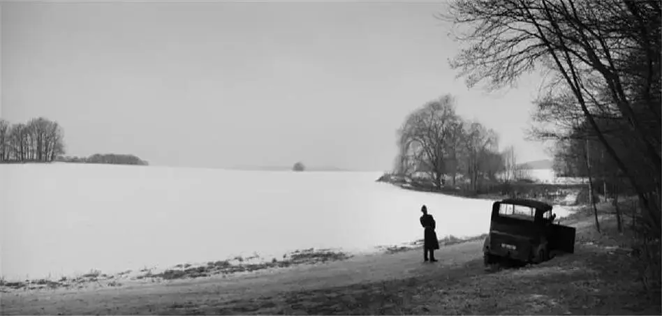
这种感觉真爽!
郝罗德擦洗了自己的面孔，打理了自己的头发，对着镜子一照，还真有点上尉的气质。
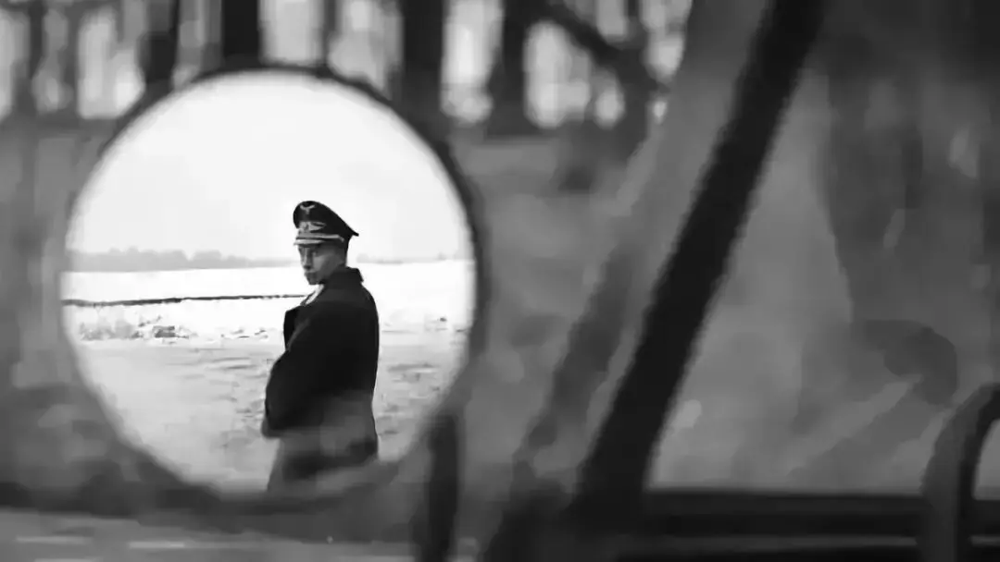
忽然，一个士兵蹑手蹑脚地从远处走来，正当郝罗德不知所措时，这位士兵战战兢兢地说：列兵瓦尔特.弗莱塔格向您报到，上尉先生。
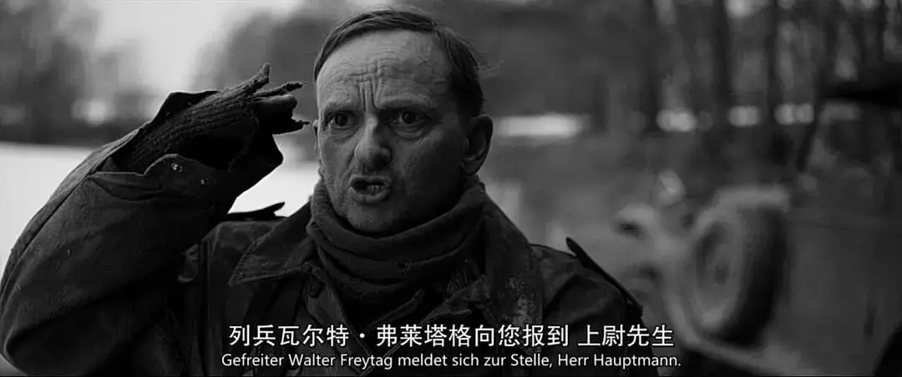
就这样，郝罗德将错就错成为了一个冒牌上尉。
接着，郝罗德声称自己接受了元首亲命的特殊任务，要在战场上肃清秩序，彻底解决战场上软弱无能的逃跑主义，以确保德军的战斗意志。
就靠着这个幌子和身上的军衣，他一路接收溃兵和逃兵，组成了郝罗德卫队。
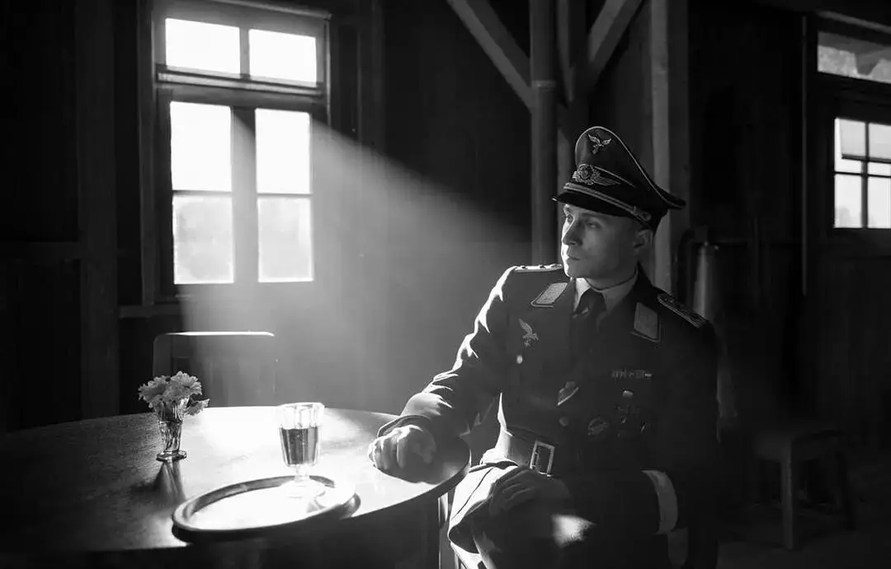
乱世中无上的权力将这个可怜的逃兵逐渐变成了一个杀人不眨眼的恶魔。
起初，他用这项特权骗吃骗喝骗住，接着他开始开枪杀人，最后，他在一个营地里屠杀处决了90名囚犯。
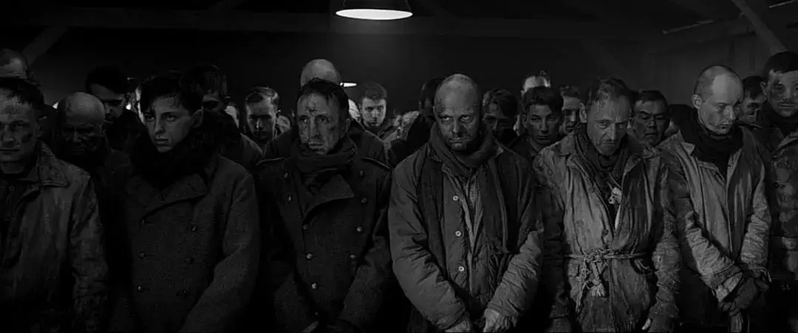
这个荒诞恐怖的剧情来自于高分电影《冒牌上尉》，而最令人恐怖的是这竟然是真实事件改编。
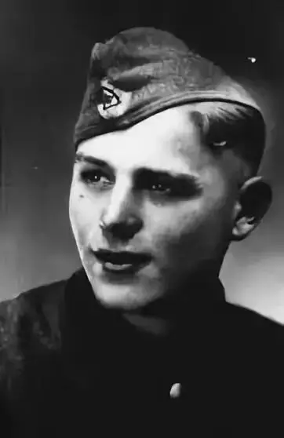
△19岁郝罗德的身上最后背了一百多条人命，二战后，郝罗德被审判处死，当时年仅21岁。
这是大虾近期看过最恐怖的一部电影。
黑白肃杀的画面、戏谑残忍的故事情节、令人不安的工业音乐配乐，都让人如坐针毡。
而这份惊悚会一直会延续到电影结束，原来，人性之恶远超过我们的想象！
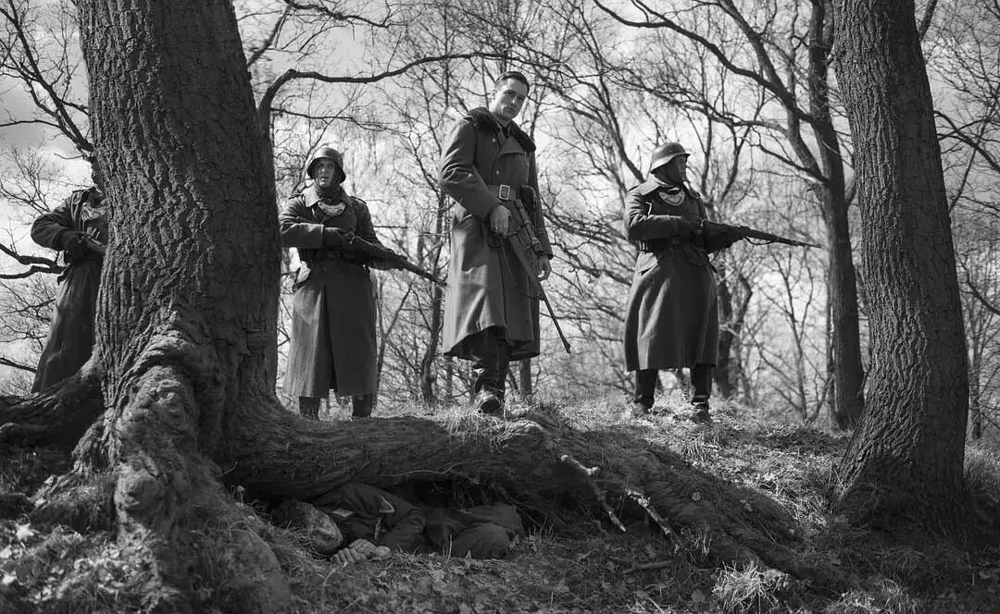
-01- 权力的春药
仅仅几天，郝罗德便坠落为魔鬼，何以至此？
曾有人说过：出身卑贱的小人一旦大权在握，就会比谁都凶残。
郝罗德作为一个逃兵，曾被拥有生杀大权的上尉虐待，他明白作为一个逃兵的悲凉处境。
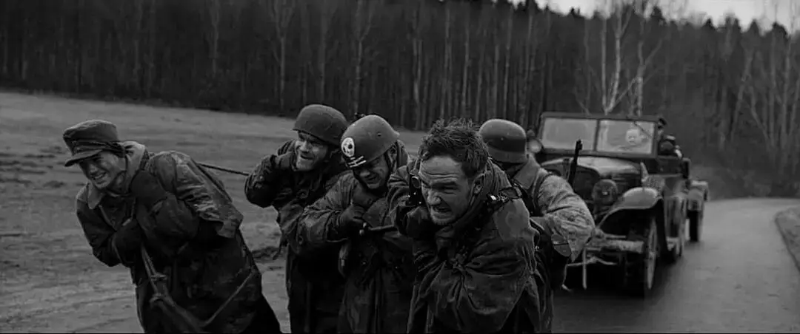
当他自己“黄袍”加身后，他对很多逃兵、溃兵仍然会心存同情，可权利的诱惑如此之大，让他不得不竭力泯灭自己的良心。
当看到其他上尉不敢对逃兵下狠手时，郝罗德为了取得他们的认同，他命令自己的手下去虐杀逃兵。
手下二话不说抡起棍子就朝一个逃兵的头上砸去，就是那个逃兵已经昏死在地上，这个手下仍然一直打个不停，直到他自己累瘫在地。
这一疯狂行径让所有人都瑟瑟发抖，就是郝罗德自己也被吓呆了，但是他仍然故作镇静，保持着一个纳粹上尉该有的冷血和淡定。
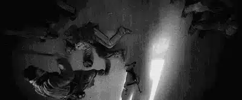
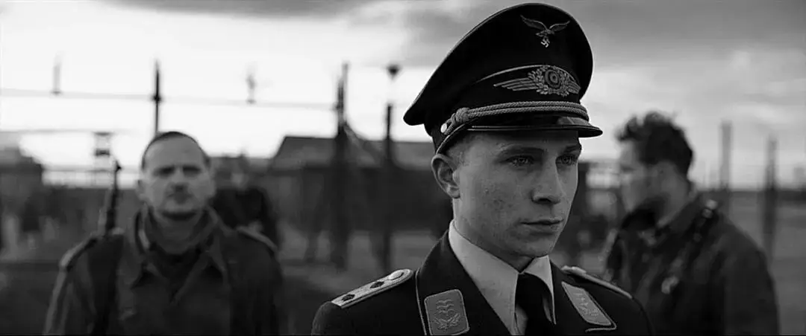
郝罗德一路蒙混过关起初靠的是奥斯卡般的演技，但当他亲自命令别人对一个又一个逃兵虐杀后，他与过去那个软弱胆小又有着人性知觉的自己彻底决裂了。
郝罗德成为了真正的上尉，一个沉溺于权力欲望、嗜血、暴虐的疯子。
当他假冒上尉的事情败露后，在法庭上，他依旧面不改色、大义凛然，他比其他胆小怕事的上尉更像上尉。
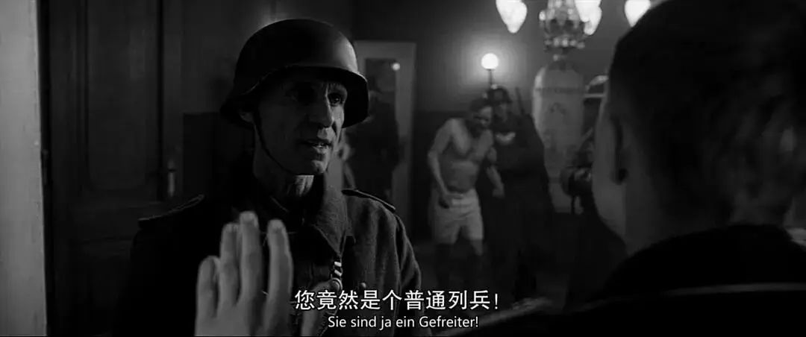
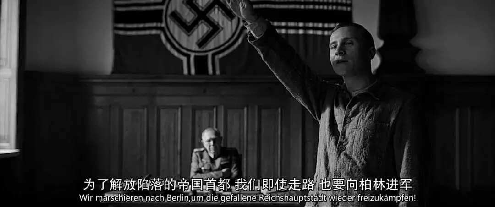
而更加可怕的是，法庭上一个纳粹高官竟然认同了郝罗德的行为，并让他免于死刑。
在无上的权力面前，维护正义的法庭就是个装饰品。
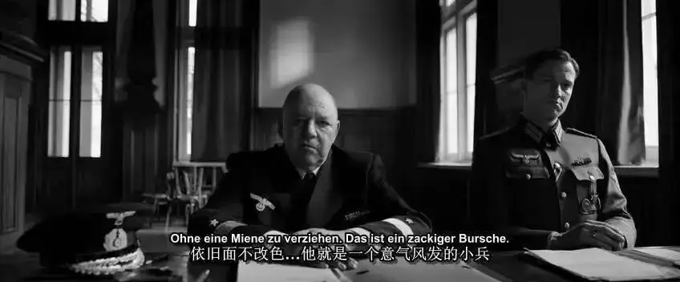
-02- 共谋者
郝罗德的演技很高，但还不至于能够骗过所有人。
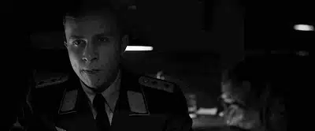
真正让他攀上权力高峰的是那些同样渴望权力的共谋者，在那个末日般的乱世中，他们需要权力为所欲为。
郝罗德最初收纳的逃兵亲眼目睹了这个光杆司令的模样，尤其是其中一人一眼就看穿了郝罗德的把戏，因为他的裤子完全不合身。
可是他们没有揭穿，因为作为逃兵、溃兵，他们可能随时面临处罚，可如果有一个上尉收编自己，那自己就不是逃兵了。
更具有吸引力的是，郝罗德声称自己接受了元首的特命，要维护战场的秩序。
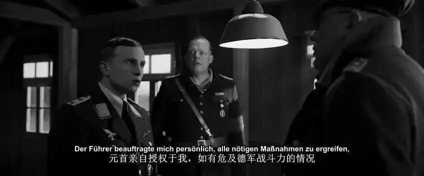
所有人都明白没有人可以向希特勒核实这项任务的真实性，而有了这个噱头，他们可以一路绿灯，狂吃海喝。
既然这样，为什么要自断后路？
于是，郝罗德卫队就是一群彼此心知肚明的强盗。
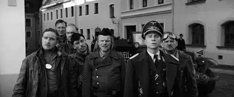
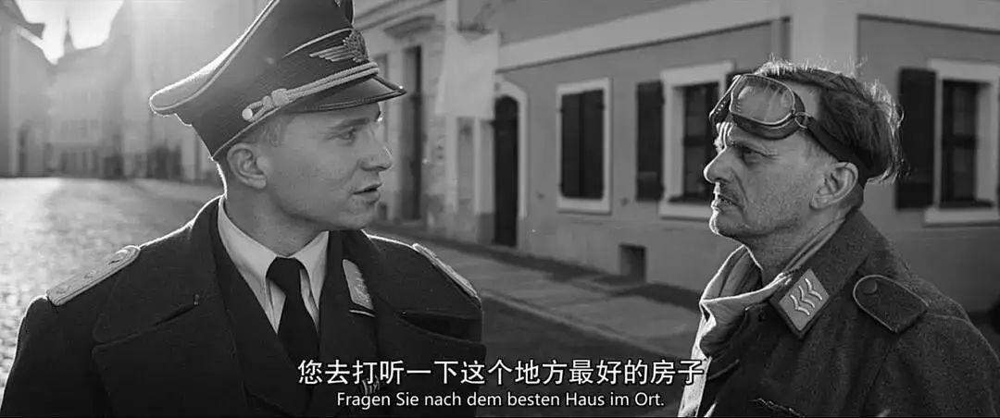
随后，更高级别的上尉也加入到这个强盗集团中，他们中有人想要郝罗德在元首面前美言几句，有人则希望借郝罗德的手完成自己做不了的事。
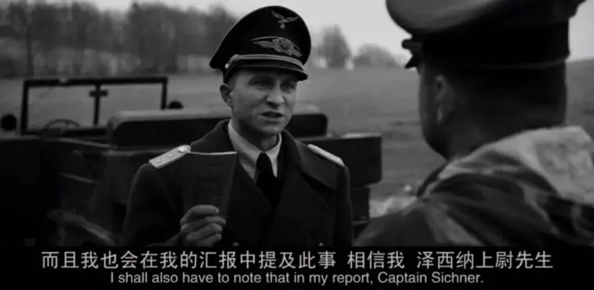
有意思的是，电影刚开始虐杀郝罗德的上尉明明已经认出了郝罗德，可他却没有拆穿，因为郝罗德赐给他们一项心慕已久的权力。
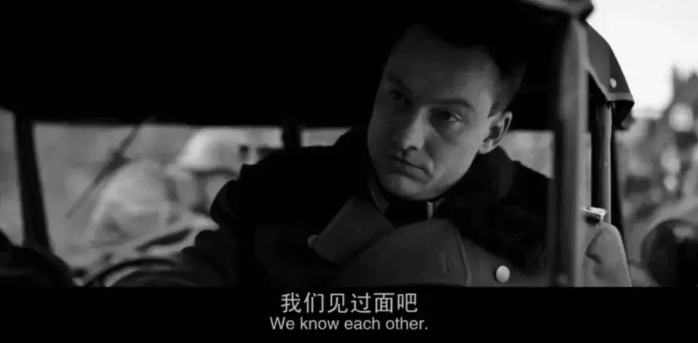
当时的军营除了要对付盟军，还要花很大的功夫给逃兵提供吃住，这让这些上尉非常不爽：
“战争中逃跑之人，瓦解部队斗志，对于在前线英勇奋战的将士是极大的不公、是对已经阵亡的将士极大的侮辱，必须予以清除。”
他们想要彻底铲除这些“蛀虫”，可是他们并没有这个权力，除非上级主持召开军事法庭对逃兵进行审判。
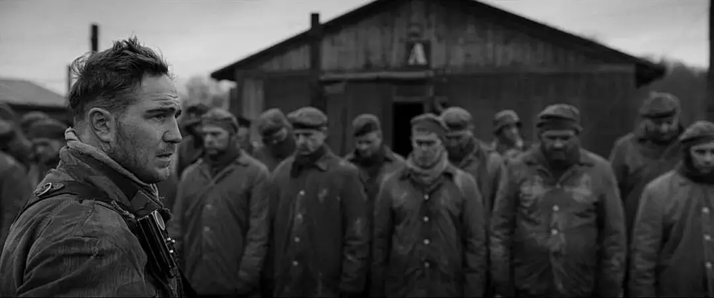
在此之前，他们不能乱来，军营里有宪兵的监督，随意处决逃兵就是违规行为。
可是郝罗德上尉就不一样了，他可是元首亲命特殊任务的上尉，谁都不敢否认和元首关系如此亲密的上尉没有权力召开军事法庭。
郝罗德也明白其他上尉的心思，他告诉他们“那就由我来授予您必要的职权”。
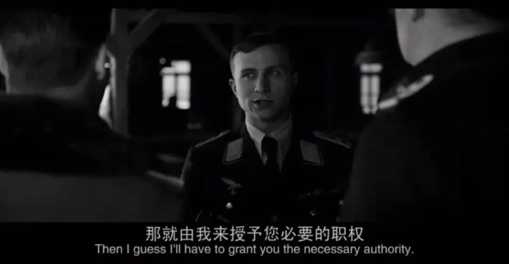
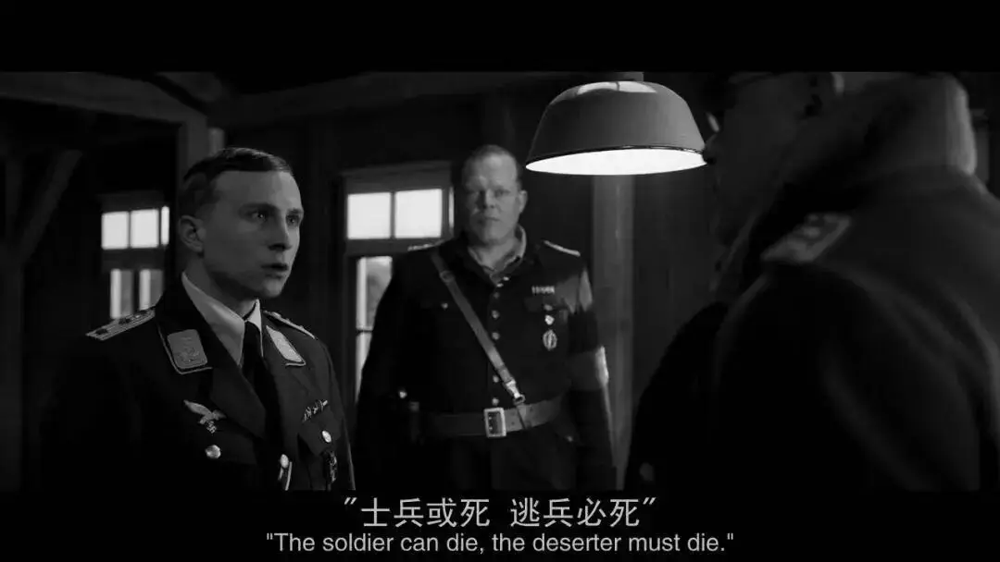
这让其他上尉兴奋不已，纷纷称赞郝罗德简直就是天才。
郝罗德的出现让宪兵无可奈何，权力制衡失效后，这个军营一下子变成了屠宰场。
这些暴徒一边高喊着希特勒万岁，一边用高射炮、机关枪射杀所有的逃兵。
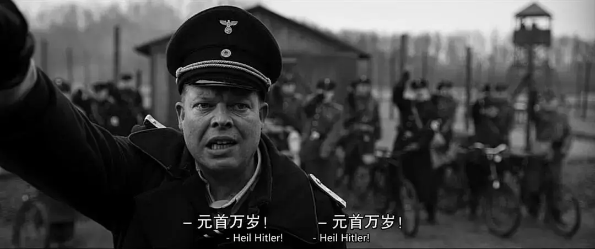
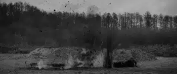
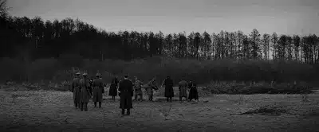
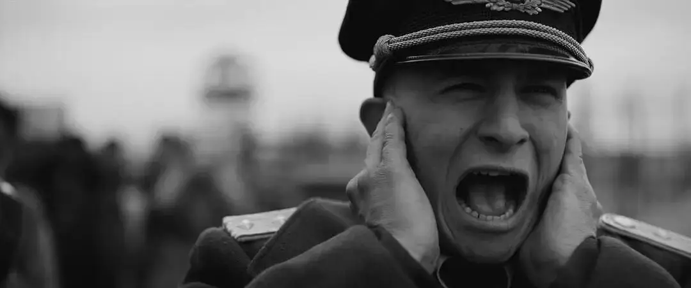
一阵枪林弹雨之后，他们将石灰粉洒在血泊中彻底断绝了生还者的希望，手段之残忍闻所未闻。
这场屠杀从白天一直持续到深夜。
更加丧心病狂的是，这群沾满无辜人鲜血的恶魔连夜还搞了个庆祝会，场面疯狂、混乱、戏谑让人不寒而栗。
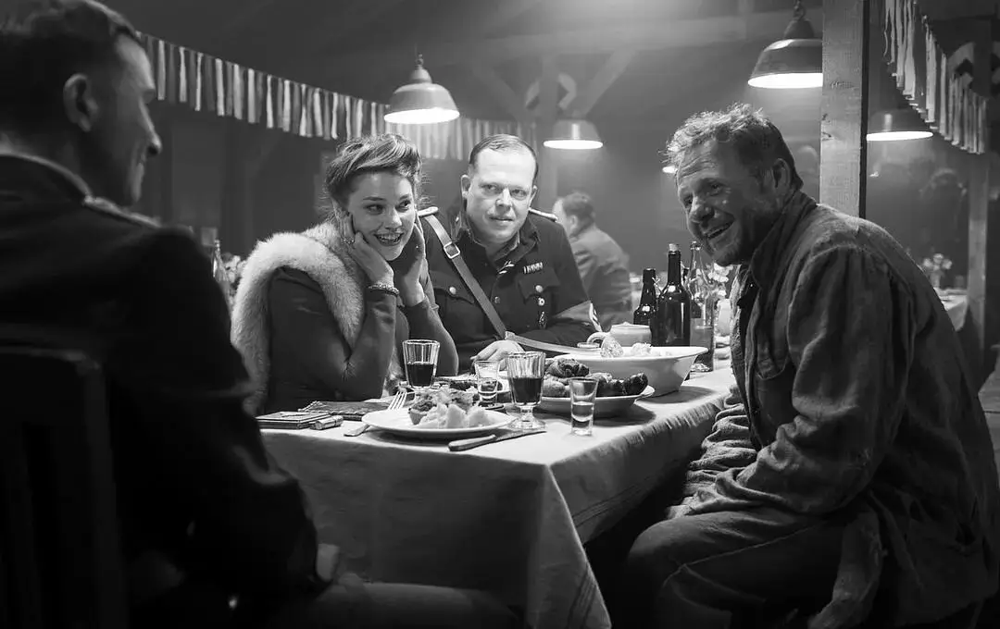
任何一个暴君的身边一定围着一群嗜血的魔鬼，他们相辅相成将权力之恶放大到极致。
-03- 平庸之恶
著名极权主义政治理论家家汉娜·阿伦特在研究纳粹的恐怖行径中指出，在这个罪恶的体系中，有一些人表现出来的不是“极端的邪恶”，而是“平庸的邪恶”。
所谓平庸的邪恶是指当任何人甘于放弃对善恶是非的判断力去赝服权威，那么最平凡的人也可能导致最极致的邪恶。
在这个恐怖事件中，平庸之恶体现的淋漓尽致。
列兵瓦尔特就是这样一个人，他非常衷心，总是义无反顾服从着郝罗德的命令。
郝罗德的转变他看在眼里，曾有很多次，他想要阻止郝罗德的疯狂，可是他始终欲言又止，就是一句善意的提醒他都没有发出。
在郝罗德的喝令下，瓦尔特一面备受良心谴责，一面又昧着良心作恶。
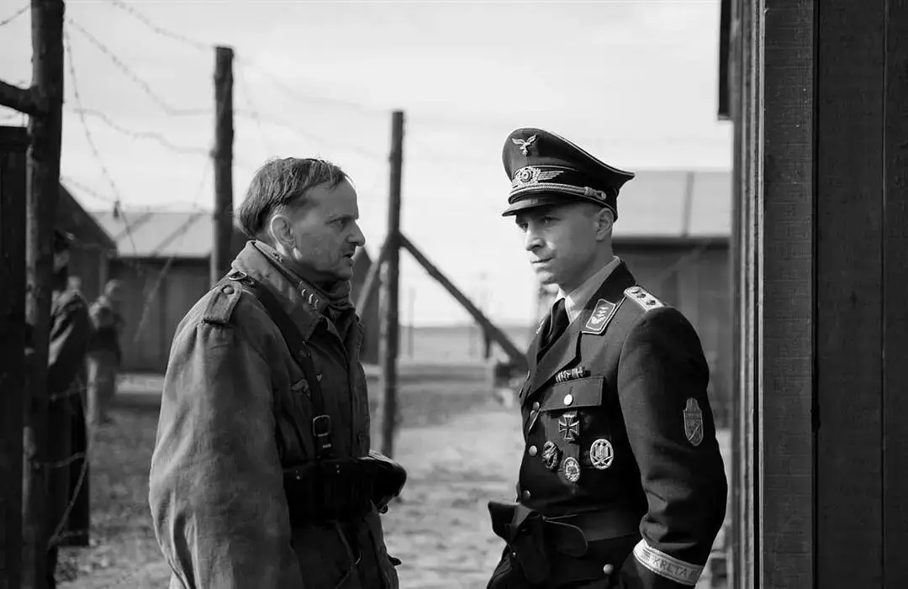
当众人听到一大堆尸体中传出的哀嚎声时，上尉命令其他士兵下到尸坑，将那人毙命。
没有人敢下去，他们低头拒绝了上级的命令。
这时，郝罗德命令瓦尔特去执行命令，瓦尔特无辜地看着郝罗德的眼睛，希望郝罗德能够放过自己。
可是郝罗德的眼睛非常冷峻坚毅，瓦尔特明白如果他不执行这一命令，郝罗德会将他杀死。
于是，瓦尔特下到尸坑中，他淌过沉积很深的血水，爬过一个个冰冷的尸体，随着一声响亮的枪声，那微弱的哀嚎声彻底消失在夜空中。
那一刻，整个空气都静止了，瓦尔特的良心也彻底停止了哀嚎。
这场屠杀之后，瓦尔特彻底丢掉了道德、良心和信仰，他成为了一个杀人不眨眼的刽子手。
发号施令的只是那一个人，将那恐怖行径付诸实际的却是无数个平庸之人。
平庸之恶最大的恐怖就是对自己撒谎。
在《卡拉马佐夫兄弟》中，德米特里问斯达洛夫，“要赢得拯救我必须做什么？”
斯达洛夫回答道，“首要的是，绝不要对自己撒谎”。
瓦尔特漠视了上帝放在他心中的道德律和是非之心，他没有追随自己内心的真实感受，丢掉了独立的判断和思考，屈从于“强权及正当”，最后沦为一个恶魔。
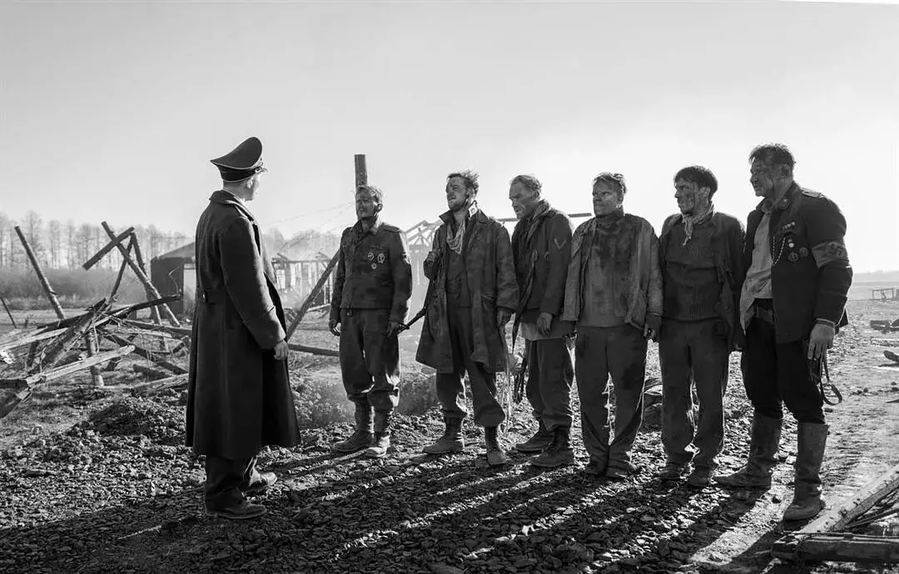
如今纳粹覆灭已经70年，这种对强权顺从的平庸之恶还存在么。
电影结尾处，导演做了个社会实验，郝罗德列队穿越到现今社会，他们开着坦克，穿着纳粹军服，一路飞扬跋扈调戏妇女、抢劫路人的钱包。
而经过现代民主洗礼和纳粹反思的人们几乎没有反抗，甚至没有逃跑，顺从着他们的要求，其中一人还直接跪了下来。
这是何等的可怕，如果德国再出现一个野心家能够攫取至高的权力，历史或许将再次重演。
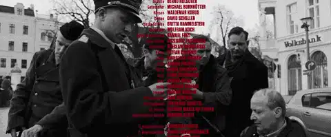
-04- 堕落的罪人
不受监管的权力、推波助澜的帮凶、放弃个体良知和责任的平庸之恶。
这就是独裁生长的土壤，也真真实实地说明了一个问题，那就是每个人都是堕落的罪人。
我说的这个“罪人”不是法律意义上的罪犯，而是一种情感、理性、意志全面堕落的罪人，他们没有行善的情感动力、没有分辨真理的理性、缺乏坚持正义的意志。
总之，稍有不慎，罪人就会作恶，稍有压力，罪人就会背叛真理。
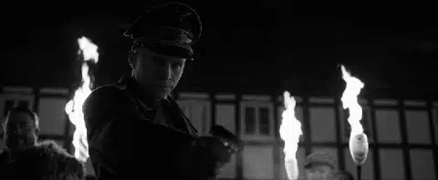
因此，权力来到人间必须要有监管和制衡，有问题的不是权力，而是权力之上的罪人。
罪人除了需要监督，更需要救赎，他们需要信仰去面对个体的堕落和群体的堕落。
每个人都知道不应该说谎，可没有人可以真的不说谎，而信仰可以给他们不说谎的力量和勇气。
哪怕不说谎的代价是要付出自己的生命。
电影中郝罗德命令一个逃兵去射杀另一个逃兵，那个逃兵痛苦不已，他将抢口对准对方，身体不停地颤抖，忽然，他将枪口调转、饮弹自尽。
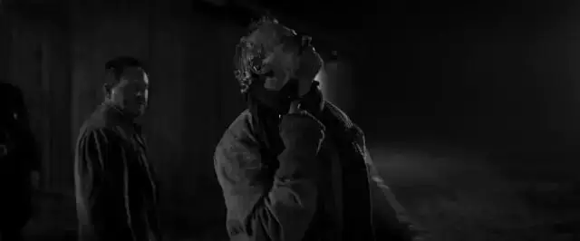
这个场景让人无比震撼，他用生命杜绝了平庸之恶，因为他深深相信，真理、良善的价值远超过自己生命的价值。
世俗化很难给出这种力量，因为世俗化最重要的就是享乐和自己的生命，道德、良知、信仰在他们眼中都是虚头巴脑的点缀，必要时可以全部丢弃，闷声发大财才是正道。
而信仰给出了关于人的全部答案，上帝不仅直接指出人是堕落的罪人，更透过耶稣定死十字架对罪人进行了救赎。
这种救赎之爱不仅以至高的神圣视角肯定了真、善、美的价值，更以信、望、爱为人类坚守真理指明了出路。
所以，强权面前，他们敢于质疑，混乱之中，他们能够清醒，冷漠之中，他们敢于去爱，因为他们有着永不移动的信仰指向标。
对于我们来说，这个指向标远比任何制度、科技、道德、法治、教育更重要。
因为，我们的制度、我们的科技、我们的道德、我们的法治、我们的教育太容易说谎了！
推荐阅读
▼
（点击图片即可获取全文）

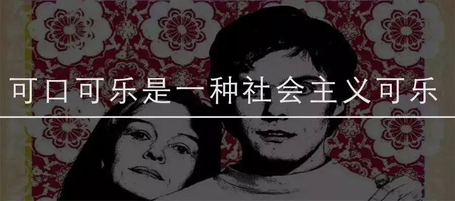


这里没有挑逗你眼目情欲的小鲜肉
也没有挑动你肉体情欲的段子
更没有膨胀你今生骄傲的鸡血
我们只在乎那些最质朴真诚的作品
在那里我们才能恢复真正的想象力
我们也坚信这才是我们真正需要的

ID:Six_hundred_hits
长按二维码，一键关注
【六百击】
-END-
电影评论
尽情分享朋友圈

苹果打赏通道
小提示：文末广告是腾讯配送广告，内容与本号无关，但您的每次点击（无需反复点）都会给平台带来几毛收益，欢迎您点击支持六百击。